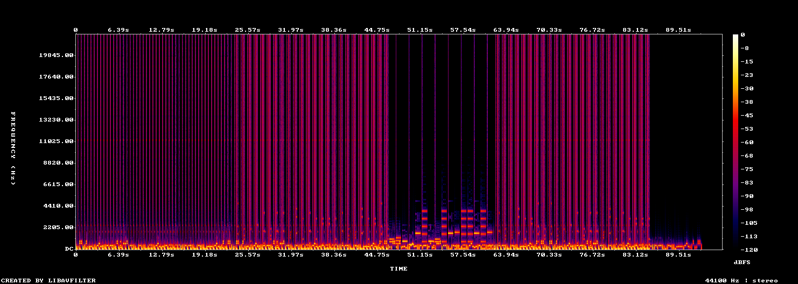
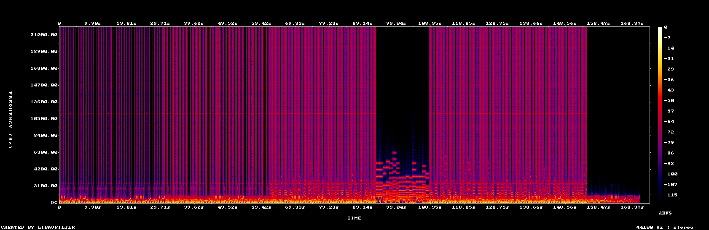
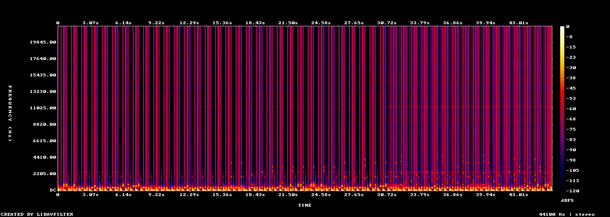
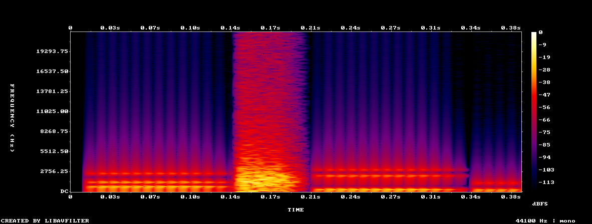
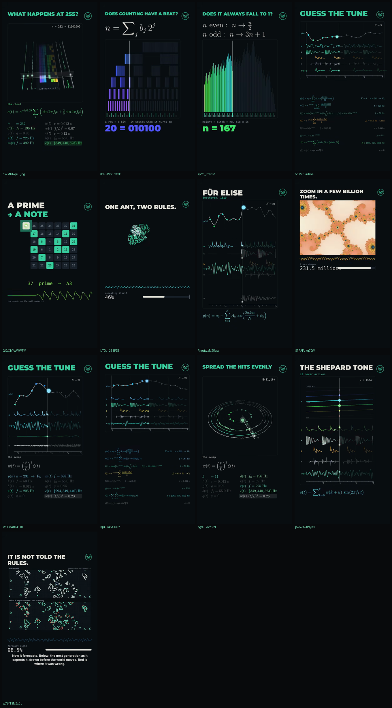
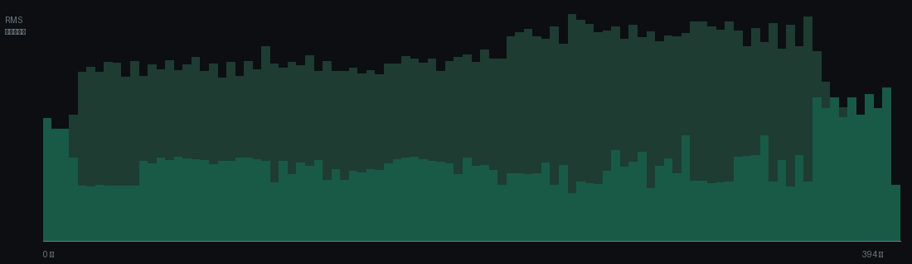
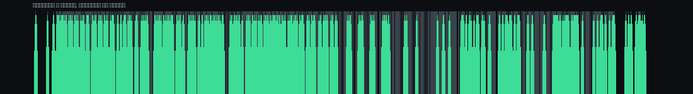

Блог Зеркалиуса
Новинки · 17 ноября 2026 · только результаты, объяснения — по ссылкам
Видео

видео · youtubeZerkalius — Kraftwerk Bits
1:38 · 1280×720 · 30 к/с · открытый доступ
youtu.be/1-bjrPRuJRg →

видео · youtubeZerkalius — Глифы
2:55 · 88 тактов · 2306 событий · открытый доступ
youtu.be/YRyzDvYmbmw →

видео · youtubeZerkalius — петля без шва
0:46 · 46,080 с · стык 0 мс · открытый доступ
youtu.be/fYH0AB7RA8Q →
Музыка
трекKraftwerk Bits
1:36 · 124 BPM · 792 события · пик 0,676 · клиппинга нет
MP3 →
петля
Kraftwerk Bits · без шва
46,080 с · 2 032 128 семплов · стык 0 мс · дыра 0,107 RMS
MP3 →
трек
Глифы
2:53 · 88 тактов · 2306 событий · секции 0,093→0,129→0,051→0,129→0,036
MP3 →

голос · чистая математикаNumbers · синтетический голос
1:57 · 66 цифр · импульсный возбудитель и три резонатора · ни одного сэмпла
MP3 →
Статьи

разбор · статьяAbstract Machines: как сделаны ролики
13/13 роликов · темпы 125–200 BPM · 17–60 пиков · гармонический ряд 65,9 Гц
issledovanie/abstract-machines →

разбор · статьяKarl Bartos — Numbers / Computer World
394,1 с · 67 BPM · пульс 0,894 с · 802 / 245 событий · 58 пульсов из 94
issledovanie/bartos-numbers →
Код
модульСинтез звука из битов
биты → число → высота → партиалы → PCM · 11 тестов · голоса bitsHarmonic / bitsShepard / bitsClick
mayatnik-bit-synthesis.js →
исправление
Тишина коротких голосов на медленном темпе
1 условие в огибающей · 3 теста · 120/100 BPM побайтово прежние
mayatnik-synthesis-tempo.test.cjs →
Правила работы агентов

протоколПланы, переписка, промпт
намерение до работы · разведение файлов · готовый текст для новой сессии
ПЛАНЫ.md · ПЕРЕПИСКА.md · ПРОМПТ.md →